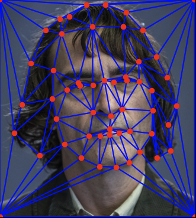
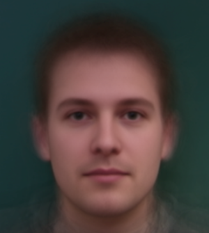
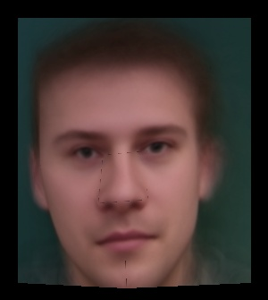
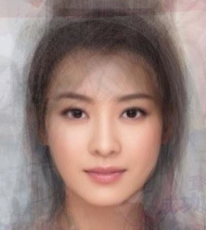
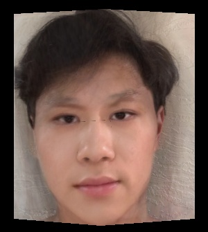

CS 180 Project 3: Face Morphing
Exploring Face Morphing Techniques
Your Name
Introduction
In this project, I explored face morphing techniques by producing a morph animation between two faces.
I also computed the mean of a population of faces and extrapolated a caricature from the mean. Face morphing
is achieved by warping the image shape and cross-dissolving the colors between two faces. The warp is controlled
by defining correspondences between facial features, such as the eyes, nose, mouth, and ears. Moreover, I worked with
images of Danish people and found the average face of a Danish person, as well as trasnformed myself into the opposite gender
by using an averaged image of Chinese females.

My Face

Joker's Face
Defining Correspondences
I started by taking a picture of myself and selecting an image of Arthur Fleck (Joker).
To properly morph the images, I used a student-made keypoint labeling tool to mark corresponding
facial landmarks (eyes, nose, mouth, etc.) on both images. These points ensured proper
alignment of facial features during the transformation. Next, I computed the mid-way shape
by averaging the correspondence points from both faces. Using these points, I applied
Delaunay triangulation to divide the faces into triangular regions, which helped
preserve the structure and smoothness during the morph. Finally, I visualized the
triangulation for my face, Joker's face, and the mid-way shape to confirm the
accuracy of the correspondences and triangulation.
My Face with Correspondence Points
Midway Delauney Triangulation

Joker's Face with Correspondence Points
Computing the "Mid-way Face"
In this section, I computed the "mid-way face," which is a blend of both my face and the
Joker's face. The mid-way face is created by averaging the shapes and pixel values of the
two images, resulting in a face that is a 50/50 mix of both. To achieve this, I used
Delaunay triangulation to divide both faces into corresponding triangles. For each
pair of triangles, I calculated an affine transformation that mapped my triangle onto
the mid-way triangle and similarly mapped the Joker's triangle to the same mid-way
triangle. Once the affine transformations were computed, I warped each triangle from
my face and from the Joker's face to fit the mid-way shape. Then I averaged the pixel
values of the warped regions from both images. Here is the result.
My Face
Joker's Face
The Morph Sequence
I created an animation that smoothly transitions my face into the Joker's face over 45 frames.
For each frame, I gradually warped the facial structure using intermediate points between both
faces, controlled by a warp fraction. Simultaneously, I blended the colors from both images
using a dissolve fraction, ensuring a smooth transition in appearance. The result was a
continuous morph sequence, where the shape and colors of my face gradually transformed into
the Joker's, producing a fluid and natural-looking animation.
The "Mean Face" of a Population
Next, I worked with a dataset of 37 Danish faces to compute the average face. I began by extracting
key facial points from .asf files associated with each image, which marked important features. Using these keypoints,
I calculated the average shape of the faces and warped each face to fit this geometry using Delaunay triangulation.
After aligning all the faces to the average shape, I averaged their pixel values to create the "mean face"
of the population, representing the typical facial features of the dataset. Lastly, I compared my face to the
average face by warping my face into the average geometry and vice versa.

Dane 1

Dane 3
Dane 1 Morphed to Average

Dane 2 Morphed to Average
Dane 3 Morphed to Average

Mean Face of Population

My Face Morphed to Average Dane

Average Dane Morphed to My Face
Caricatures: Extrapolating from the Mean
For this section, I exaggerated my facial features by manipulating the keypoints in relation to
the average face of the population. Using an extrapolation factor (alpha), I adjusted the
keypoints to either emphasize the differences (positive alpha, e.g., 1.4) or make
my features closer to the average (negative alpha, e.g., -1.5). I then warped my face to these
new, exaggerated geometries using Delaunay triangulation, creating two caricatures: one where
my features are exaggerated and distinct, and another where they are more blended with the average.

α = 1.4
Changing Genders
In the Changing Genders section, I transformed my face into the face of an average Chinese female
by experimenting with both shape and appearance changes. First, I morphed my face into the female
shape by aligning my facial structure with the average female keypoints while keeping my original
appearance. Then, I applied only the female appearance, maintaining my original facial structure
but adopting the female's textures and colors. Finally, I combined both the shape and appearance t
ransformations, fully morphing my face into a female version, altering both the geometry and visual
traits.
My Face

Average Chinese Female

Morph Appearance Only